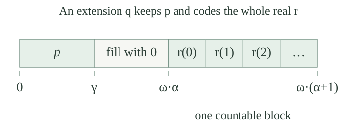

A forcing order \(P\) is countably closed if every descending sequence \(p_0\ge p_1\ge\cdots\) has a lower bound: a condition \(q\in P\) with \(q\le p_n\) for all \(n\in\omega\). As usual, smaller conditions carry more information.
For the model assertions, let \(M\) be an externally countable transitive set model of ZFC, let \(P,\le,1_P\in M\) be forcing-order data, and let \(G\) be \(M\)-generic under the standing extension convention. Our hypothesis is
Thus the descending sequence must belong to \(M\), and its lower bound must be found there. Sequences available only outside \(M\) are not covered by this internal assertion. Write \(N=M[G]\); the extension theorem makes it a transitive ZFC-model with the same ordinals and natural numbers.
Let \(\delta\in M\) be an ordinal and let \(p\) force that a ground-model name \(\dot f\) is a function \(\check\omega\to\check\delta\). For every \(n\in\omega\), the set
belongs to \(M\) and is dense below \(p\). The family \((D_n)_{n\in\omega}\) belongs to \(M\), and each deciding condition has a unique decided value.
The forcing theorem defines the fixed formula for function evaluation inside \(M\). Separation forms each \(D_n\), and Replacement collects the family, using \(n\) as a parameter of that same formula.
For \(r\le p\), choose a generic filter through \(r\). Its extension gives one value \(\beta<\delta\) to \(\dot f(n)\). Every member of the ground ordinal \(\delta\) belongs to \(M\). The truth lemma and a common refinement inside the filter give \(q\le r\) forcing that exact value. This is the ordinal-decision argument, which requires no chain condition. Bounded density for these supplied ground sets is absolute, so the density assertion also holds inside \(M\). If one condition decided two values, a generic through it would make those values equal.
Assume internal countable closure and the hypotheses of . The ground set
is dense below \(p\). Here \((\delta^\omega)^M\) is the set of functions from \(\omega\) to \(\delta\) computed in \(M\).
Work inside \(M\), and start below any \(r\le p\). Fix a well-order of \(P\) there. Put \(p_0=r\); once \(p_n\) is chosen, let \(p_{n+1}\) be the first condition in that well-order which lies in \(D_n\) and strengthens \(p_n\). Density supplies a choice at every stage. Natural-number recursion inside \(M\) gives the entire descending sequence as a member of \(M\). The invariant is that \(p_{n+1}\le r\) and it decides each coordinate with index at most \(n\): previous decisions persist under strengthening.
Internal countable closure gives \(q\in M\cap P\) with \(q\le p_n\) for every \(n\). Let \(h(n)\) be the unique ordinal decided for the \(n\)-th coordinate by \(p_{n+1}\). This relation is definable in \(M\); Replacement yields \(h\in(\delta^\omega)^M\). For any generic filter through \(q\), monotonicity makes every coordinate of \(\dot f\) equal to \(h(n)\). Both functions have domain the unchanged \(\omega\), so extensionality gives \(q\Vdash\dot f=\check h\).
Forcing this fixed equality is definable in \(M\), and the witness \(h\) ranges over the set \((\delta^\omega)^M\); Separation therefore forms \(E\in M\). We constructed a member of \(E\) below every \(r\le p\), proving density. We have not asserted that this particular lower bound belongs to the original filter \(G\).
Under the countable transitive ground-model convention, if \(M\) regards \(P\) as countably closed, then for every ordinal \(\delta\in M\),
More generally, every function in \(M[G]\) from \(\omega\) to the ordinals already belongs to \(M\).
Let \(f\in M[G]\) be a function \(\omega\to\delta\), and choose a ground name \(\dot f\) for it. The truth lemma supplies \(p\in G\) forcing this function assertion. By , the set \(E\in M\) of conditions deciding \(\dot f\) to equal a whole ground function is dense below \(p\). The ground set \(E\cup\{q:q\perp p\}\) is dense in \(P\): a condition compatible with \(p\) first has a common refinement with it, and then a refinement in \(E\). Genericity makes \(G\) meet this dense set. Since \(p\in G\), the filter cannot meet its incompatible part, so it meets \(E\). A member \(q\in G\cap E\) forces \(\dot f=\check h\) for some \(h\in M\). Semantic forcing then gives \(f=h\in M\). Old functions remain functions on the same sets, proving the reverse inclusion.
For an arbitrary ordinal-valued \(f\in M[G]\), Replacement and Union in the extension bound its range below some ordinal \(\delta\) there, for example the successor of the supremum of its range. The models have the same ordinals, so \(\delta\in M\). Apply the bounded conclusion. The dense-set step is essential: existence of some strengthening deciding the sequence would not alone put that strengthening in \(G\).
Under the same hypotheses, \(M[G]\) has exactly the binary reals of \(M\), and \(\omega_1^{M[G]}=\omega_1^M\). The assertion about binary reals is equivalent to there being no new subsets of \(\omega\).
A binary real is a function \(\omega\to2\); use \(\delta=2\) in . A subset of \(\omega\) determines its binary characteristic function, and that function determines the subset. These constructions occur in both models, proving the subset formulation too.
Put \(\Omega=\omega_1^M\). Each \(\alpha<\Omega\) has a ground injection into \(\omega\), which remains an injection in the extension. Hence the new first uncountable ordinal is at least \(\Omega\). If \(\Omega\) itself became countable, the extension would contain a surjection \(\omega\to\Omega\). The no-new-sequences theorem would put that function in \(M\). Surjectivity between the fixed ground sets is absolute, contradicting \(M\)'s definition of \(\Omega\). Thus \(\Omega\) remains uncountable and is the extension's first uncountable ordinal.
Work inside \(M\), and put \(\Omega=\omega_1^M\). The countable binary initial-segment order is
A condition is a binary function whose domain is an ordinal \(\alpha<\Omega\); its length is \(\ell(p)=\alpha\). The functions and the union in this definition are computed in \(M\). Power Set, Replacement and Union there make \(P\) a set in \(M\). Reverse inclusion is a partial order, and the empty function is its largest condition.
Two conditions are compatible exactly when they agree on their common domain. Because their domains are initial segments, this is equivalent to one extending the other: the shorter function must be the restriction of the longer one.
The order of is countably closed inside \(M\). For every descending sequence \((p_n)_{n\in\omega}\in M\), its specified lower bound is \(\bigcup_{n\in\omega}p_n\).
Work in \(M\). The functions extend one another, so their union \(q\) is a binary function, and its domain is the ordinal \(\alpha=\sup_n\ell(p_n)\). The regularity of \(\omega_1\) gives \(\alpha<\Omega\): a countable family of countable ordinals has countable union. Thus \(q\in P\), and it extends every \(p_n\). Replacement and Union make this actual union a member of \(M\). This verifies closure with the required internal sequence and internal lower bound.
For each \(\beta<\Omega\), the ground set \(D_\beta=\{p\in P:\beta<\ell(p)\}\) is dense in \(P\).
Given \(p\) of length \(\gamma\), set \(\delta=\max(\gamma,\beta+1)<\Omega\). Extend \(p\) to domain \(\delta\) by assigning zero to every new position. This is a condition \(q\le p\) with \(\beta<\ell(q)\). All parameters and the extension belong to \(M\); Separation there forms \(D_\beta\). Thus this is a dense set which genericity actually requires the filter to meet.
For the initial-segment order, \(g=\bigcup G\) is a total binary function \(\Omega\to2\), and \(g\in M[G]\).
Any two filter members have a common stronger condition, so they agree wherever both are defined. Their union is a function. For every \(\beta<\Omega\), the filter meets \(D_\beta\) from , so the union is defined at \(\beta\). Every condition has domain below \(\Omega\), proving that its domain is exactly \(\Omega\).
Use the ordered-pair name \(\operatorname{op}\) and canonical check names to form in \(M\)
This is a set of name attachments obtained by Separation and Replacement over \(P\times\Omega\times2\). An active attachment has value \((\xi,b)\) exactly when some \(p\in G\) has \(p(\xi)=b\). Hence \(\dot g[G]\) is exactly the graph of \(g\). This ground name places the whole function in the extension.
For every \(\alpha<\Omega\) and \(n\in\omega\), the position \(\omega\cdot\alpha+n\) lies below \(\Omega\). The map \(n\mapsto\omega\cdot\alpha+n\) is injective. Given any \(\gamma<\Omega\), there is \(\alpha<\Omega\) with
The sum and product of countable ordinals are countable. Thus \(\omega\cdot\alpha+n<\Omega\), and addition is strictly increasing in its right argument, giving injectivity. For freshness, take \(\alpha=\gamma+1\). The first point of each \(\omega\)-block embeds \(\alpha\) into the ordered product \(\omega\cdot\alpha\), so \(\alpha\le\omega\cdot\alpha\). Hence \(\gamma<\omega\cdot\alpha\). The end \(\omega\cdot(\alpha+1)\) is still countable, so it is below \(\Omega\).
Say that a condition \(p\) codes \(r\) at block \(\alpha\), written \(\operatorname{Codes}(p,\alpha,r)\), when for every \(n\in\omega\),
For each \(r\in(2^\omega)^M\), the following ground set is dense:
Let \(p\) have length \(\gamma\). Choose a fresh block as in . Take \(\delta=\omega\cdot(\alpha+1)\) as the new length. Keep the old values below \(\gamma\), set \(q(\omega\cdot\alpha+n)=r(n)\) for each \(n\), and give every remaining new position value zero. The block starts after \(\gamma\), and its positions are distinct, so these prescriptions agree. Every position of the block is below \(\delta\). Thus \(q\) is a condition in \(M\), belongs to \(E_r\), and strengthens \(p\). The definition of \(E_r\) uses only the ground parameters \(r,P,\Omega\), so Separation puts it in \(M\). This proves density.

Define the block listing by
It is a function \(F\in M[G]\) from \(\Omega\) to the binary reals of the extension. Every old binary real belongs to its range.
The positions are valid by . To exhibit the function as a name value, first form, uniformly in \(\alpha<\Omega\),
Its value is exactly the graph of \(n\mapsto g(\omega\cdot\alpha+n)\), by the same active-attachment argument as for \(\dot g\). Replacement in \(M\) collects this uniformly defined family of names. Using the largest condition, form the ground name
Every largest-condition attachment is active. Therefore its value is precisely \(\{(\alpha,F(\alpha)):\alpha<\Omega\}\), so this whole function belongs to \(M[G]\). Its function and domain assertions are absolute for these supplied sets. Finally, for any old \(r\), genericity makes \(G\) meet \(E_r\) from . If \(p\) witnesses this at block \(\alpha\), the union extends every bit of \(p\), so \(F(\alpha)=r\).
From any externally countable transitive set model \(M\) of ZFC, the countable binary initial-segment order has a generic extension \(N=M[G]\) which satisfies ZFC and CH, has exactly the binary reals of \(M\), and satisfies \(\omega_1^N=\omega_1^M\).
A ground-model generic filter exists by the countable-model construction. Apply the extension theorem to obtain the transitive ZFC-model \(N\). Internal closure from and give equality of the reals and preservation of \(\Omega=\omega_1^M\).
The named function \(F\in N\) of lists every old real. Every real of \(N\) is old, so \(N\) regards \(F:\Omega\to2^\omega\) as surjective. Since \(\Omega=\omega_1^N\), this gives \(N\models2^{\aleph_0}\le\aleph_1\). Cantor's theorem supplies the reverse uncountable lower bound. Hence \(N\models2^{\aleph_0}=\aleph_1\), which is CH.
The construction starts with the stated transitive model. Bare consistency does not itself provide that model, as the relative-consistency criterion explains. Together with the many-Cohen-real construction, this supplies opposite CH truth values under the same transitive-ground-model premise.
Suppose \(M\models2^{\aleph_0}=\kappa>\aleph_1\). In the CH extension above, is the old cardinal ordinal \(\kappa\) still a cardinal? How can the continuum change when its reals are unchanged?
The old cardinal \(\kappa\) collapses. In \(M\), choose a bijection \(b:\kappa\to(2^\omega)^M\). It remains a bijection in \(N\) between the same old sets, and the target is exactly \((2^\omega)^N\). But the new block listing gives a surjection \(\Omega\to(2^\omega)^N\). Choice in \(N\) therefore gives \(|\kappa|^N\le|\Omega|^N=\aleph_1^N\). The fixed ordinal \(\kappa\) is strictly greater than \(\Omega\), so it cannot remain a cardinal ordinal.
The members of the set of reals have not changed. The extension contains a new function listing those same members with fewer indices. Countable closure preserves \(\omega_1\) and prevents new countable ordinal sequences; it does not imply preservation of every larger cardinal.
If \(M\) is externally countable, is its countable binary initial-segment order countably closed in the ambient universe as well?
No. Externally \(\Omega=\omega_1^M\) is a countable limit ordinal. Choose outside \(M\) an increasing sequence \((\alpha_n)_{n\in\omega}\) cofinal in it. For each \(n\), the identically zero condition on \(\alpha_n\) belongs to \(M\). These conditions form an external descending sequence in \(P\).
A lower bound would extend all of them and would have domain length at least \(\sup_n\alpha_n=\Omega\), so it would not be a condition. Hence the external sequence has no lower bound in \(P\). The whole sequence cannot belong to \(M\), since its cofinality would contradict the internal regularity of \(\Omega\). Internal countable closure quantifies over the descending sequences which are members of \(M\), exactly as required in the no-new-sequences proof.